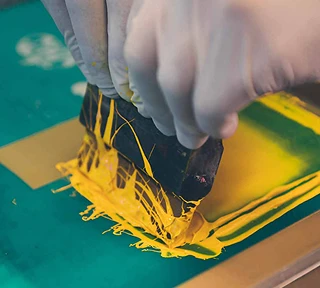

The order form experience was complex and difficult to navigate, leading to friction in the user journey. I redesigned the flow to simplify interactions, resulting in a more comfortable experience and improved completion rates.
This case study explores the redesign of a B2B custom apparel ordering experience, where customers struggled to place complex orders without support.
As the sole UX-UI designer, I led the project end-to-end to improve clarity, confidence, and self-service adoption across the ordering experience.
01End-to-end ownership of research, strategy, interaction design, and visual execution.
02The business context of a B2B custom apparel ordering platform.
03Key usability issues that pushed customers to rely on phone orders.
04UX improvements across the quote & order flow, cart, account experience, and visual system.
05Results, key learnings, and reflections from designing for complex B2B orders.
My Role & Involvement
Client
Acted as the primary design point of contact for the client, presenting strategy, wireframes, and design iterations and incorporating feedback throughout.
Developers
Collaborated closely with front-end and back-end developers to validate design feasibility and clarify functional logic, especially for complex order flows.
QA
Worked with QA engineers during pre-launch testing to review visual fidelity and interaction behavior, ensuring the final implementation matched design intent.
PM & internal teams
Partnered with the PM and internal teams to align timelines, priorities, and business goals.
About the Business
This case study focuses on a Canada-based custom apparel printing company that primarily serves small businesses, schools, and corporate teams placing bulk orders.
While the company had a working website, most customers avoided it, preferring to call customer service instead.

The Problem
Entripy's website wasn't working the way it should:
01Customers were unsure about pricing, product options, and timelines.
02The order form asked for the wrong information at the wrong time.
03Errors weren't clearly flagged, leading to incomplete checkouts.
04Support teams spent hours walking users through processes that should take minutes.
50+
The redesign covered over 50 pages across key user flows.
Homepage
Product listing
Product detail
Brand listing
Category listing
Order form
Sample ordering
Cart
Checkout
Customer account
Blog
Content Pages
Strategic UX Interventions
01
A Smarter Quote & Order Flow
Redesigned the order process to give users clarity, control, and confidence while building complex team orders:
Introduced a quote builder showing dynamic pricing by product, quantity, and print location.
Structured the order form into clear sections: product basics, customization, personalization.
Created two flows: one for first-time artwork uploads and one for reusing saved settings.
Added disabled CTAs and inline error messages to prevent incomplete orders.
Quote and order flow.
Dynamic pricing (individual and total) updates based on quantity added, with out of stock and inventory message handling.Order flow divided into 3 parts: Select Item, Customize and Personalize.
02
Simplified Cart Experience
Redesigned the cart to make bulk order management easier; clear grouping, inline editing, and visible progress toward checkout.
Reorganized cart into visual groups with cleaner blocks and spacing.
Moved all personalization (names, numbers, fonts, colors) to the order form, keeping the cart for overview and quick edits.
Designed inline editing that customers could open the order form from the cart, with prefilled details, instead of starting over.
Added clear error markers at group level so users could fix issues quickly.
Built trust with a timeline and “next steps” summary at checkout, explaining Entripy's unique proofing and payment flow.
Checkout experience flow.Order details and personalization can be edited directly from the cart. Shipping details and next steps are surfaced near checkout for better clarity.
03
My Account Experience
Designed an order history and proof approval system that gives users clear visibility into order status, approvals, and delivery timelines:
Status OverviewUsers can see all pending, approved, and completed orders at a glance.
Proof ApprovalApprove or reject design proofs directly from the account.
Timeline TrackingClear visibility into production and delivery stages.
Order history showing pending, approved, and completed orders with clear status labels.Post-purchase flexibility: Orders remain editable and proofs reviewable until final approval.
04
Unified Brand Visuals
As part of Entripy's 25th anniversary, the redesign extended beyond usability; aligning the digital experience with their refreshed brand identity and marketing goals.
In addition to applying the new visual language, I created a lightweight design guide to ensure consistency in typography, color, grid, and UI components across the redesigned website.
25th Anniversary RebrandIntegrated updated color palette, typography, and visual tone for consistency across all touchpoints.
Marketing FlexibilityAdded dynamic announcement and campaign sections for the internal marketing team.
Personalized HomepageDesigned post-login variations to highlight offers and products based on user type.
Lightweight design guide for consistent typography, color, layout, and components across the redesign.
Results
Full post-launch metrics are still being tracked, but early feedback showed:
Reduced basic support calls
Customer service teams saw fewer inquiries about pricing and quote steps during beta testing.
Smoother internal workflows
Sales staff reported a more consistent, predictable quote and order flow.
Better customer experience
Frequent B2B buyers described the new upload process as “much easier” and “less stressful.”
Conclusion
This redesign helped the business take a big step toward becoming a self-serve digital platform for custom apparel orders. By focusing on transparency, clarity, and reassurance, the new experience empowered customers to order with confidence while freeing up internal teams from repetitive support tasks.
Key Learnings
This project strengthened my ability to lead end-to-end design on a complex product. I worked closely with clients and cross-functional teams to align design decisions with technical feasibility, business constraints, and user needs; navigating feedback, trade-offs, and iteration throughout the process.